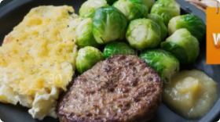
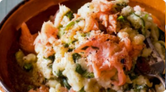
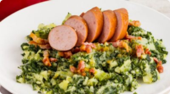

AANMELDEN | INLOGGEN
INGREDIËNTEN
1 kg kruimige aardappels
zout
1 rode paprika
2 el boter
125 gr pecannoten
1 zakje wijnzuurkool
125 gr roquefort
100 gr crème fraîche
zwarte peper
1 kg kruimige aardappels
zout
1 rode paprika
2 el boter
125 gr pecannoten
1 zakje wijnzuurkool
125 gr roquefort
100 gr crème fraîche
zwarte peper
Werner Drent is een ‘stamppot designer’. Deze oer-Hollandse pot is zijn passie.
“Ik kijk verder dan aardappels: ook mooie herfstgroenten zoals pompoen of knolselderij zijn geschikt om te stampen. De regels voor een echt lekkere stamppot: kies de aardappels en groenten uit het seizoen, zorg voor de juiste verhoudingen en gebruik nooit en te nimmer een keukenmachine, blender of staafmixer. Het grove elektrische geweld sloopt de structuur van de piepers zodat het meer op behangplaksel lijkt dan op aardappelpuree. Kies voor een pureeknijper, stamper of een vork.”
TIP!
Bij iets bijzonders past een klassieker: het eerste Nederlandse bokbier: de mooie bitterzoete Hertog Jan herfstbok. Een bovengistend biertje, wat je wat langer kunt bewaren, zodat de smaak zich kan ontwikkelen.
Instructies
- 1. Schil de aardappels en snijd ze in stukken. Kook de aardappels met water en zout in ongeveer 20 minuten gaar.
- 2. Maak de paprika schoon en snijd ’m in dunne reepjes. Verhit de boter in een koekenpan, bak de paprika en pecannoten al omscheppend 5 minuten op hoog vuur. Schep de zuurkool erdoor en bak ongeveer 5 minuten mee.
- 3. Snijd de korstjes van de roquefort en snijd de kaas in kleine blokjes. Giet de aardappels af en stamp ze fijn. Voeg de crème fraîche toe en schep het zuurkoolmengsel en de roquefort erdoor. Breng op smaak met zout en peper.


